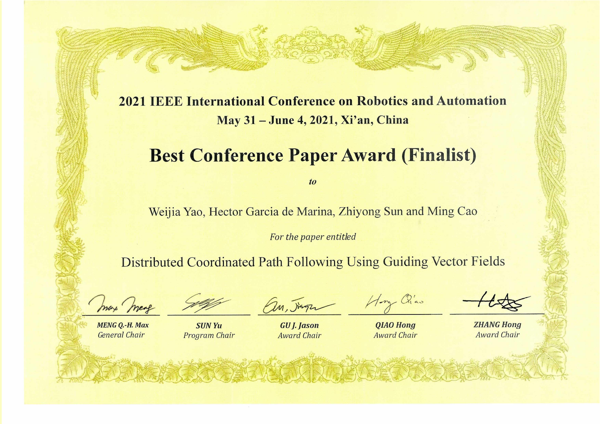
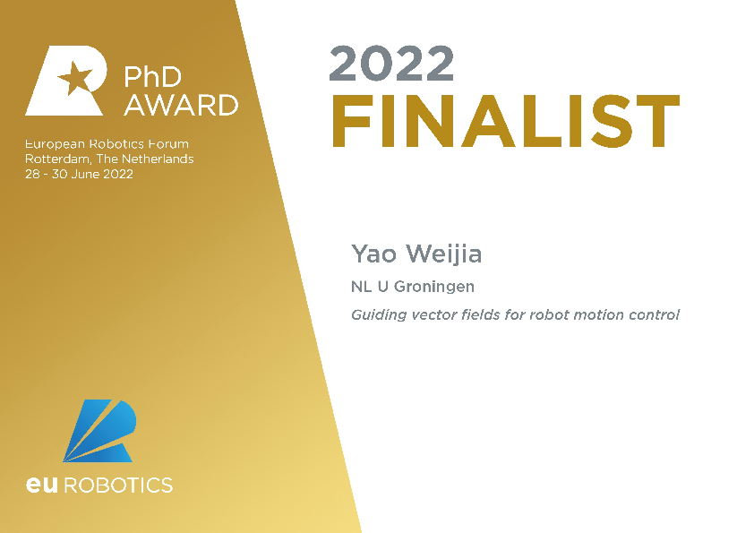

Dr. Weijia Yao – Selected Awards & Honors
Discrete Technology and Production Automation (DTPA), University of Groningen
| Time | Award & Honors |
| 2023 | European Systems & Control PhD Thesis Award (Finalist) |
| 2022 | euRobotics George Giralt PhD award (Finalist) |
| 2021 | ICRA Best Conference Paper Award (Finalist) |
| 2021 | Excellent Reviewer for Journal of Guidance, Control, and Dynamics (JGCD) |
| 2019 & 2020 | IEEE CSS Student Travel Support of CDC |
| 2020 | Outstanding Master Degree Dissertation award of Hunan province, China |
| 2019 | Champion of International RoboCup Middle Size League Technical Challenge |
| 2017 - 2021 | China Scholarship Council (CSC) PhD scholarship |
| 2016 | Champion of China RoboCup Middle Size League Scientific Challenge |
| 2016 | Guanghua Scholarship, China |
| 2014 | Canada Mitacs Globalink Research Intern award |
| 2014 | China Scholarship Council (CSC) Outstanding Undergraduate International Exchange Program scholarship |
| 2014 & 2015 | Honorable Mention of the Mathematical Contest in Modeling (MCM)
|
|
 |
2021 ICRA Best Conference Paper Award Finalist
|
|
 |
2022 euRobotics George Giralt PhD Award Finalist
|
|